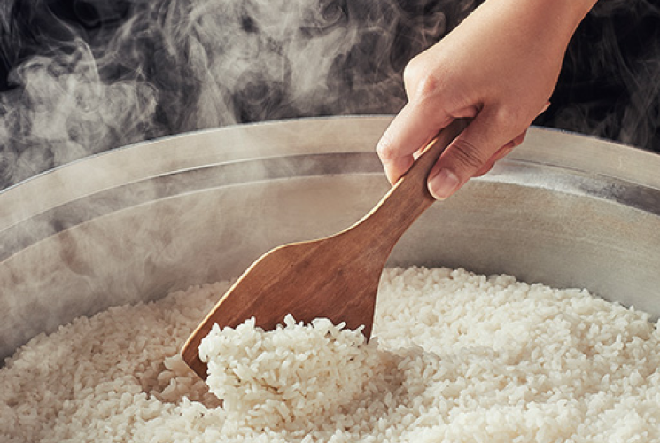
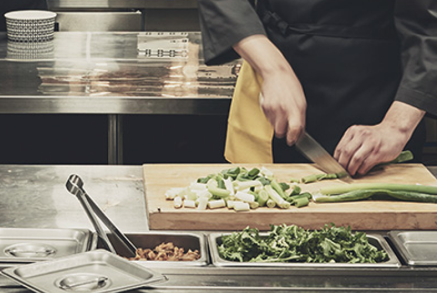
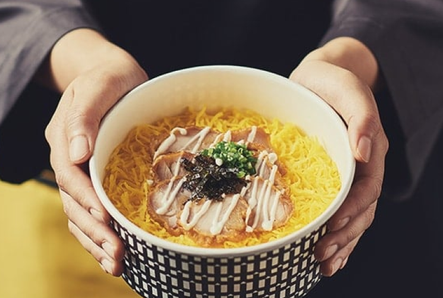

힘이 있습니다 ”
한솥은 쌀의 맛과 가격을 위하여 엄격한 테스트를 통하여
선정하고 있습니다.
김치는 땅 좋고 물 맑은 해남, 평창, 태백 등에서 재배한 배추에
국내산 고춧가루만,
불고기는 청정 호주산 S등급, A등급의 목심만 사용하여
엄격한 품질관리를 통해 최상의 품질을 유지합니다.
또한, 점주교육을 통해 외식업에 대한 철학을 공유하며


한솥입니다 ”
수많은 복지관과 보육원은 물론, 삼성서울병원을 비롯한
4개 의료기관을 후원하고 있으며,
각종 국가행사 및 재해현장에 대한 지원에서 대학교 장학금
기탁까지
사회공헌활동 또한 멈추지 않고 있습니다.
약속합니다 ”
한솥과 함께 한 수많은 고객과 가맹점주들께서 칭찬과 함께
하시는 말씀이 있습니다.
한솥은 참 착하다는 말입니다.
한솥 한 그릇으로 우정을 나누고, 사랑을 키울 수 있기를 바라는
한솥의 마음이 더 따뜻해집니다.
